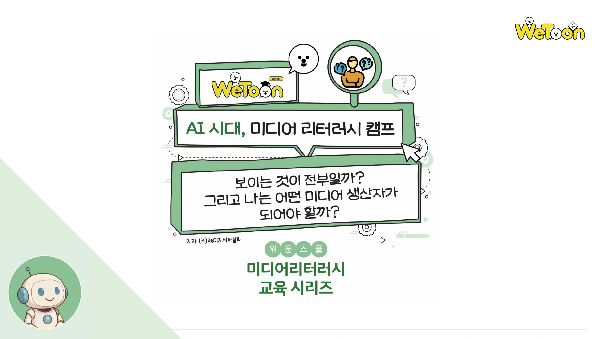

위툰스쿨 · 미디어 리터러시 미니수업

가로로 돌리면 슬라이드가 더 크게 보여요.
슬라이드를 넘기려면 브라우저에서 JavaScript를 허용해 주세요.
한눈에 보는 수업
편하게 수업하세요
화면 왼쪽 25%를 클릭하면 이전 페이지로, 나머지 영역을 클릭하면 다음 페이지로 이동합니다. 휴대폰에서는 좌우로 쓸어 넘길 수 있습니다.
리모컨에 페이지 번호를 입력한 뒤 이동 또는 Enter를 누르세요. 점 모양 손잡이를 끌어 리모컨을 옮길 수 있습니다.
슬라이드는 화면에 맞는 최대 크기로 표시됩니다. 리모컨의 ··· 버튼에서 전체 화면, 목록, 링크 복사를 이용할 수 있습니다. 조작을 멈추면 리모컨이 작게 접히며, 오른쪽 아래 페이지 표시를 누르면 다시 나타납니다.